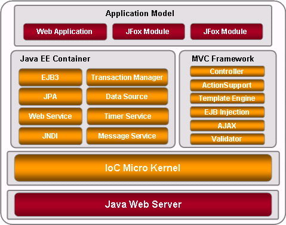

|
JFox 3.1发布 2007-10-21
JFox Team荣幸发布3.1版本，新特性如下：
- Velocity升级至1.5
- 支持提供多套数据库脚本以适配多种数据库
- 增加 Request Token，防止 Form 重复提交
- EJBContextExt提供Session访问接口，方便在EJB中访问Sesison数据
- @ActionMethod增加name属性，可以指定Action Method访问名称
- 修正了一系列bug
下载 JFox 3.1
《JFox 3.1 参考指南》。
在线演示 - 管理控制台
在线演示 - Petstore
|
|
InfoQ对话JFox核心开发人员 2007-09-17
近日，JFox荣幸地接受了IT专业媒体InfoQ的视频采访，核心开发人员杨泳和程勇分别就JFox的技术架构和开源历程进行了讲解。
对话中，你可以详细了解JFox 3.0新特性、JFox基础架构、JFox特色、OSGi相关内容，以及如何加入JFox开源项目等内容。
欢迎访问InfoQ专题: 对话JFox 3.0核心开发人员
|
|
《JFox 3.0 参考指南》HTML版发布 2007-07-07
为了方便浏览，JFox团队发布了HTML版《JFox 3.0 参考指南》，点击打开 《JFox 3.0 参考指南》。
|
|
JFox主创人员接受InfoQ采访 2007-06-25
JFox团队发布JFox Application Server 3.0版本以来，受到国内Java爱好者以及IT媒体的关注，InfoQ中文站的编辑肖桦（江南白衣）就此采访了JFox的主创人员杨泳。
部分摘录：
...应用服务器轻量化，确实是个值得关注的问题，老一代的应用服务器，WebSphere、WebLogic,甚至包括JBoss，都在离 lightweight越来越远，而用户总是喜欢简单、轻量的东西，当前工业设计以追求“简约实用”为原则，软件的设计也应该如此。JFox确实在这方面做了很多的考虑，因为我们必须这么做，否则我们无法完成整个项目的开发，我们的目标就是“The most lightweight Java EE Application Server（最轻量级的JavaEE应用服务器）”...
全文请看InfoQ文章：JFox 主开发者杨泳解析3.0特性和设计架构
|
|
JFox 3.0 “轻装上阵” 2007-05-30
JFox团队荣幸的宣布，JFox Application Server 3.0 正式发布。3.0 是一个意义重大的版本，重新构建的 IoC 微内核，支持EJB3、JPA，内置 MVC 框架，为基于Java EE的应用提供轻量、简单、高效、实用、全面的开发和运行平台！
JFox 3.0 拥有以下特性：
- 重新设计的 IoC 微内核，融入 OSGi 模块化思想
- 设计成嵌入式架构，能够和任何 Java Web Server集成部署
- 支持 EJB3，JPA规范，支持容器内和容器外两种方式运行EJB和JPA组件
- 支持 EJB 发布成Web Service
- 采用 JOTM(http://jotm.objectweb.org/)提供事务处理，支持两阶段提交(2PC)
- 采用 XAPool(http://forge.objectweb.org/projects/xapool/) 提供 XA DataSource，支持智能连接池管理
- 内置 MVC 框架，实现自动Form Mapping,Validator,Uploading等功能，支持JSP/Velocity/Freemarker页面引擎，并支持直接在Action中注入EJB
- 支持多应用模块部署，让中大型应用充分享受模块化开发带来的优势
- 提供 Manager 管理模块，可以查看和管理各种运行时参数
- 提供根据 JFox 特色重写的 Petstore 应用模块
下载 JFox 3.0
下载《JFox 3.0 参考指南》
在线演示 - 管理控制台
在线演示 - Petstore
|
|
JFox 熟了:) 2007-04-15
经过将近一年的努力，JFox 3.0 的开发和文档编写均已接近尾声，将在五一节后正式发版，3.0 版将是一个轻量实用而又不失强大的 Java EE Application Server，感谢 JFox 的成员们在过去一年时间的努力，感谢所有一直关注 JFox 的朋友！
现在，我们终于可以负责任的说，JFox 熟了 :)
|
|
写在JFox 3.0发布之前 2007-04-01
随着EJB3规范以及支持EJB3的JavaEE应用服务器的即将发布，全新Java EE体系架构的新战争将拉开帷幕，在过去3年中如火如荼的Spring占据了Java EE应用开发基础平台的大半江山，面对EJB3和Spring你应该如何选择呢？
全文请看JFox博客文章 EJB3 再战 Spring
|
|
JFox 3.0 is coming...
经过长达一年的重新架构和开发，JFox 3.0将在近期发布，敬请期待。
JFox 3 特性：
- 重新设计的 IoC 容器，融入 OSGi 模块化思想
- 改为嵌入式架构，能够嵌入到任何 Java Web Server
- 支持 EJB3, JPA
- 采用JOTM提供事务处理
- 采用 XAPool 提供 XA DataSource
- 增加 MVC 框架，支持多模块，自动Form Mapping, Validator, 支持直接在Action中注入EJB，并支持JSP/Velocity/Freemarker，满足快开发需要
- 提供 Manager 管理模块，可以查看各种运行时属性
- 根据JFox EJB3, JPA, MVC 特色完全重写 JPetstore

|
|
JFox Hosted in Googlecode
JFox 已经申请成为googlecode的项目，所有源代码由Googlecode的版本服务器控制，我们将继续提供高质量的产品。http://code.google.com/p/jfox
|